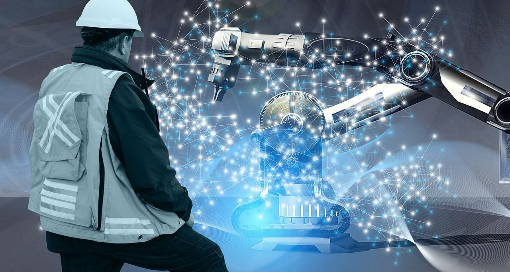
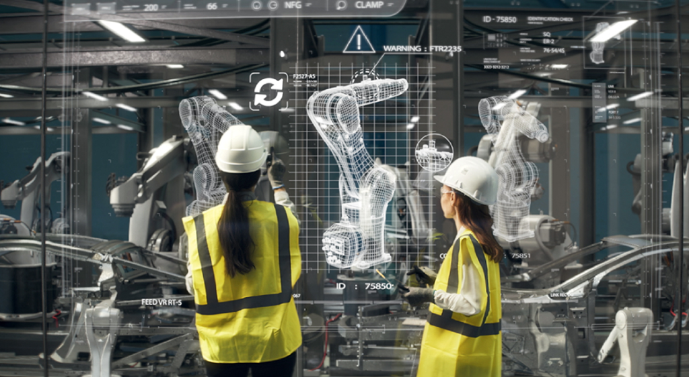

La inteligencia artificial (IA) está transformando el campo de la ingeniería de manera significativa, ofreciendo herramientas que mejoran la eficiencia y la precisión en diversas disciplinas. En la ingeniería civil, por ejemplo, la IA permite la modelación y simulación de estructuras, lo que facilita la identificación de fallos potenciales antes de que se construyan. Los algoritmos de aprendizaje automático pueden analizar grandes volúmenes de datos históricos para prever el comportamiento de materiales y estructuras, optimizando así los procesos de diseño y construcción
En la ingeniería mecánica, la IA está revolucionando la fabricación a través de la implementación de sistemas de mantenimiento predictivo. Mediante el análisis de datos en tiempo real de maquinaria y equipos, las empresas pueden anticipar fallos y programar el mantenimiento antes de que ocurran problemas graves, reduciendo el tiempo de inactividad y mejorando la productividad. Además, la robótica, impulsada por la IA, está permitiendo la automatización de tareas repetitivas y peligrosas, lo que no solo aumenta la eficiencia, sino que también mejora la seguridad en el lugar de trabajo.
n el ámbito de la ingeniería eléctrica y de software, la IA está facilitando el desarrollo de sistemas más inteligentes y eficientes. Los ingenieros utilizan algoritmos de IA para optimizar circuitos y sistemas de energía, permitiendo un uso más eficiente de los recursos. Además, en el desarrollo de software, la IA está cambiando la forma en que se escriben y prueban las aplicaciones, con herramientas que ayudan a detectar errores y mejorar la calidad del código. Así, la inteligencia artificial no solo mejora la productividad, sino que también impulsa la innovación en la ingeniería, abriendo nuevas posibilidades y enfoques en la resolución de problemas.